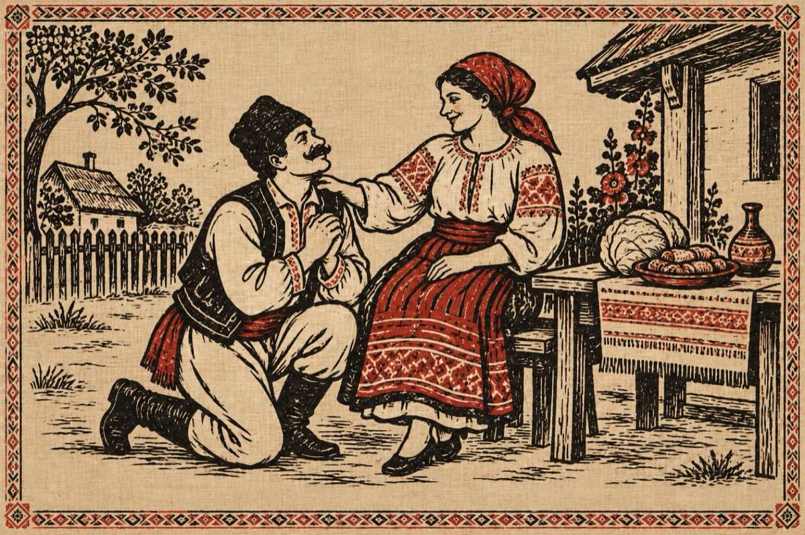

Văsălie amețâtu’
– Tu Mărie inghea-i fo’
Că n-am stare, minchen crep.
Zăuitata-i că șâ io
Am minche ca să pricep?
– Tulai Doamne, ce gângești,
Că-s de alea ce să umblă?
Fusă-i ca să iau curechi
Crezuși că eu sunt bolândă?
De nu crez ș-un gând ce doare
Întreab-o pă nana Floare!
– Lasă-l focului curechi
Că șâ ieri ai fo’ la broazbe
Ce tu crez că n-am urechi
Ca s-aud de tine vorbe!
Că ai fo’ cu-a lui Mitruț,
Sâ că hăla țâ-i drăguț?
Tu zăuiți ce ai în foale?
– Ce te umfli în grumaz
Nu mâncară-m noi sarmale
Șâ beurăm la gin ars?
– Hai ș-om mere să durmim,
Cred că mincea mi-i beteagă.
Mi-amintii că ne iubim,
Tu Marie, îmi ești dragă!...
– Văsălie, Văsălie, mă băga-și în spărieți,
Treci șâ pune-ce-n jănunți,
Șâ zâ, Doamne să mă ierți!
– Știu Marie, tu nu minți,
Dar gin-arsu-mi umblă-n minți!
Pune-mă să mă tarăsc,
Alta-dată ge greșăsc!
Nu vreau să ce cilăvesc!
– Văsălie, … ce iubăsc!
Vasile Groza